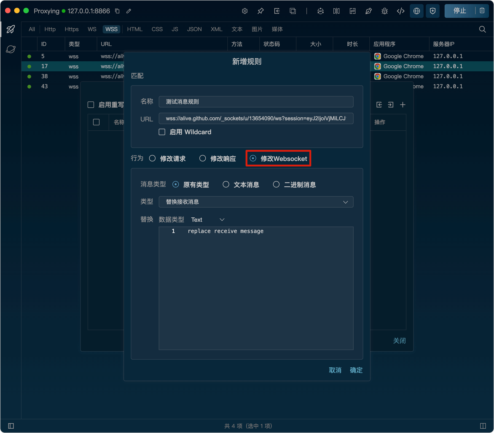
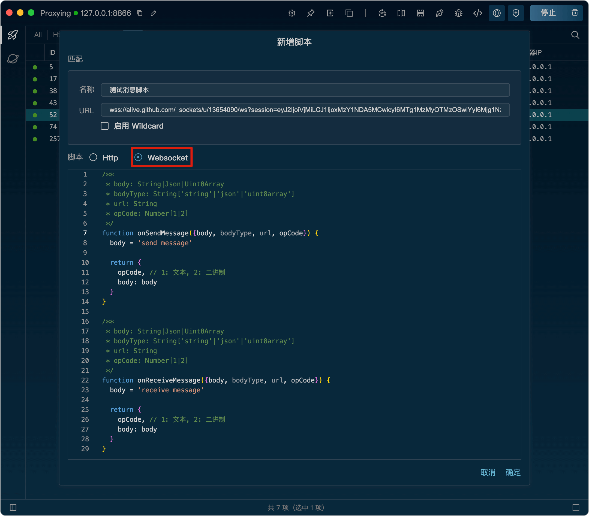

Listen 提供了两种方式来拦截和修改消息。
1、使用重写功能，编辑规则对服务端或客户端发送的消息进行拦截和修改。
编写规则时可以选择对Websocket消息体进行替换或者修改。也可以选择是否对Websocket消息类型就行更改

2、使用脚本功能，编写JavaScript代码，对服务端或客户端发送的消息进行更灵活的拦截和修改。
脚本里可以定义两个方法：
onSendMessage({body, bodyType, url, opCode})：
在客户端发送消息到达服务器之前调用，返回的{opCode, body}为修改后的消息类型和消息体。
onReceiveMessage({body, bodyType, url, opCode})：
在服务器发送消息到达客户端之前调用，返回的{opCode, body}为修改后的消息类型和消息体。
两个方法的参数说明：
body：客户端或服务端发送的消息体，为一个字符串或Object对象或者Uint8Array对象。
bodyType：body的类型，可能的值为"string"、"json"、"uint8array"等。
url：请求的完整URL地址。
opCode：Websocket消息类型。
例：下面的脚本代码会在客户端发送到消息到达服务器之前将消息内容修改为“send message”。在服务器发送消息到达客户端之前，将消息内容修改为“receive message”。
